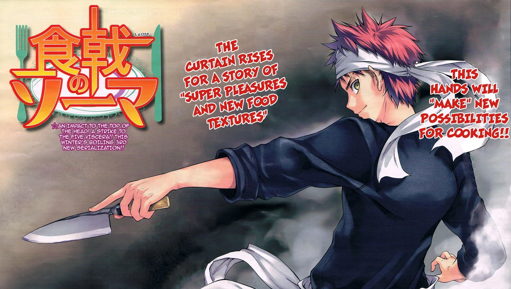
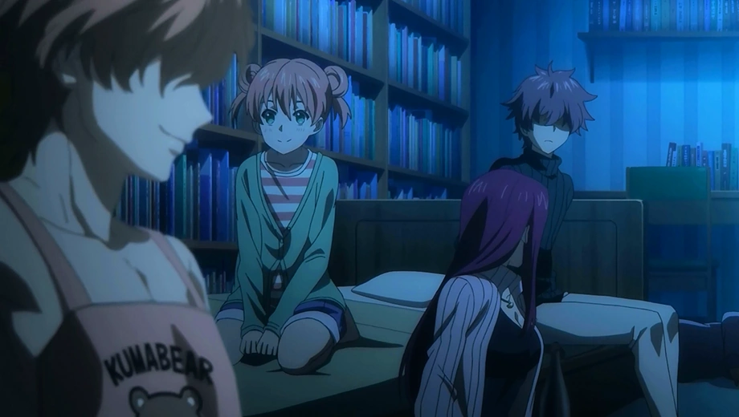
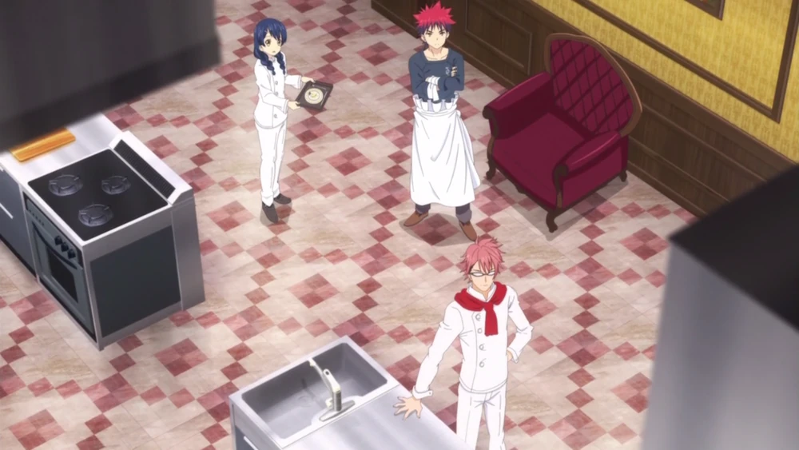
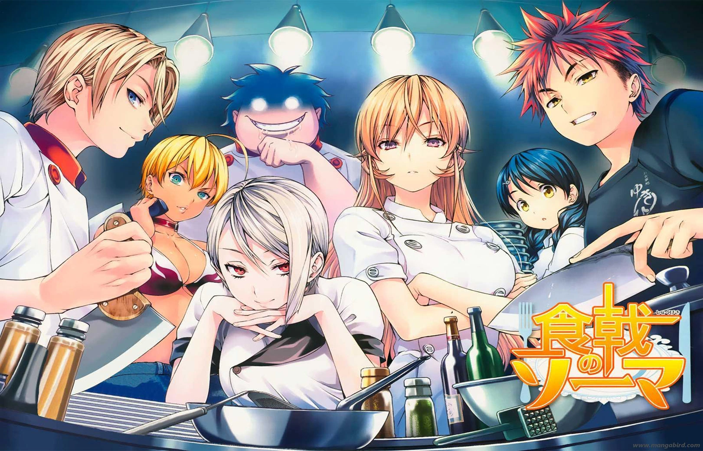
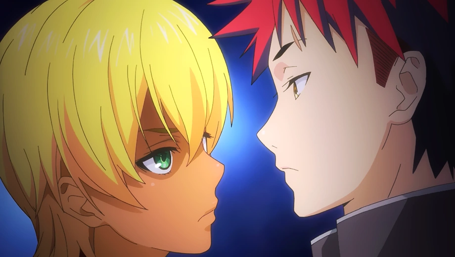
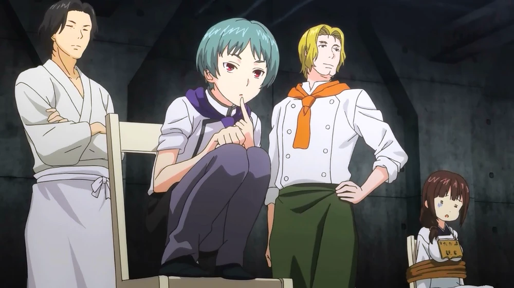
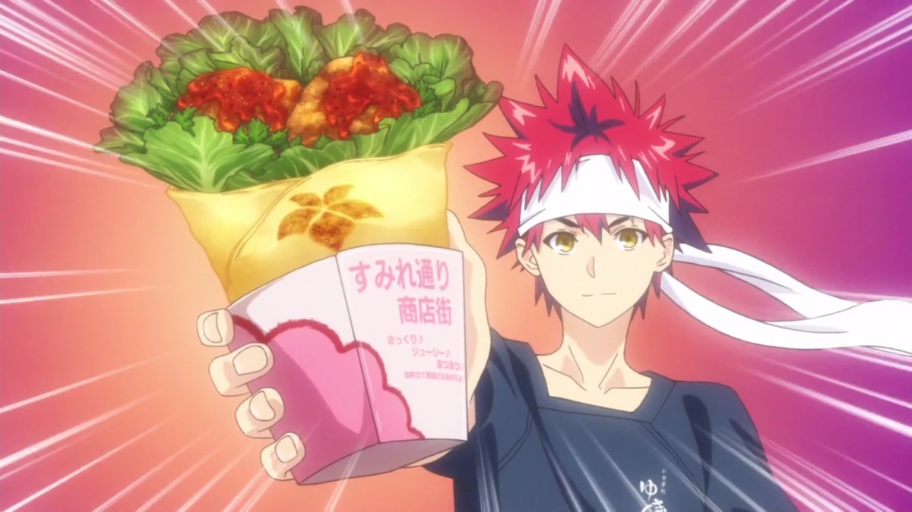
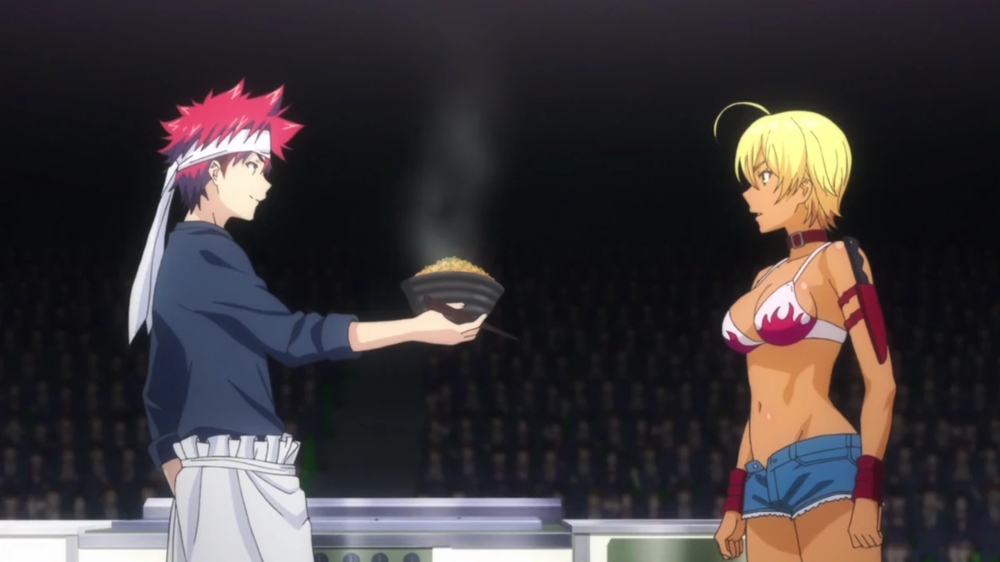
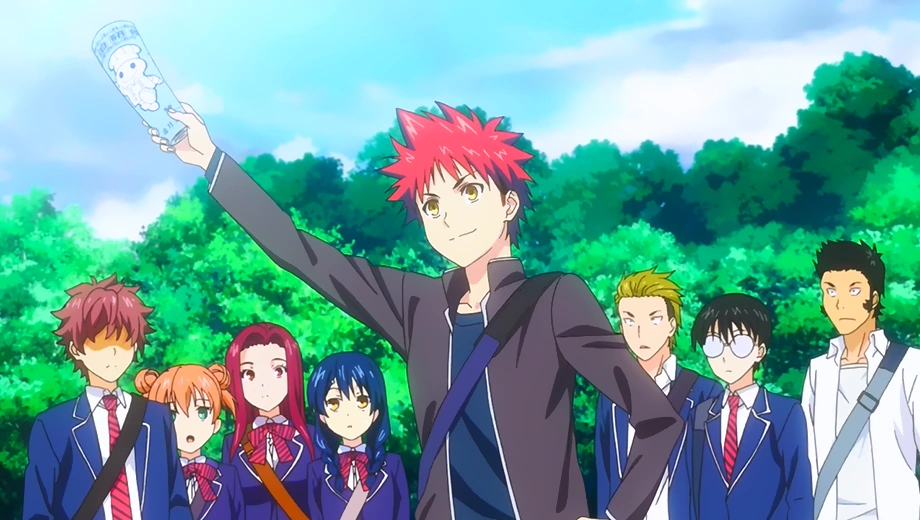
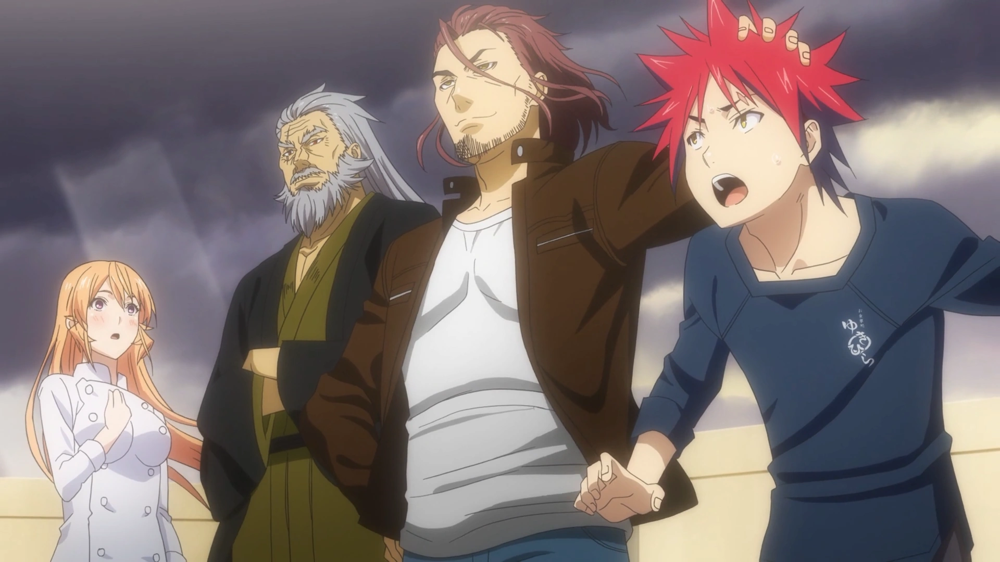

ВИДАТНІ ПОЧАТКИ
- Episode 1: The Endless Wilderness — перший епізод, де Сома Юкіхіра прибуває до Академії Tōtsuki і зустрічає виклик вступного іспиту. 
- Episode 5: The Ice Queen and the Spring Storm — Сома стикається з Еріною та її "Божественним язиком", який властиво критикує страви, що не відповідають її стандартам. 
БОРОТЬБА ТА ВИКЛИКИ
- Episode 10: The Supreme Recette — кульмінація першого арку «Training Camp», де учні показують найкращі страви перед строгим журі. 
- Episode 21: The Eighth Seat of the Elite Ten — епізод, де суперники борються за місце в «Елітній Десятці». 
ЦІКАВІ ФАКТИ
- Перший епізод був показаний 3 квітня 2015 року.
- Season 5 — останній сезон, транслювався у 2020 році.
- Один з найвищих рейтингів за переглядами отримав епізод “The Supreme Recette”.
КУЛІНАРНІ ПЕРЕМОГИ
- Episode 6: The Meat Invader — Сома готує страву, пов’язану з м’ясом, демонструючи майстерність і винахідливість. 
- Episode 13: The Magician that Came from the East — епізод, де з’являється новий персонаж, який приносить східні кулінарні техніки. 
- Episode 17: The Karaage of Youth — битва у стилі караадже з молодіжним запалом; страви, атмосфера та змагання. 
ДРАМАТИЧНІ ПОВОРОТИ
- Episode 24: A Quiet Don, An Eloquent Don — конфлікт, коли Сома досліджує свої кулінарні корені та відносини з батьком. 
- Episode 33: Totsuki Train Arc Start — початок арки із складним випробуванням для Соми і його друзів під час подорожі на потязі. 
- Episode 56: Declaration of War — момент, коли конфлікти досягають апогею, з оголошенням війни між кулінарними таборами. 